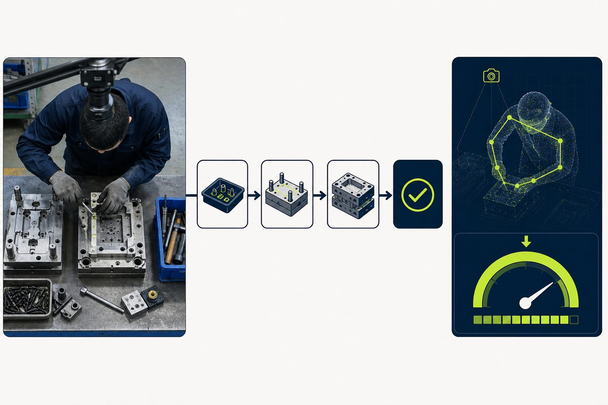
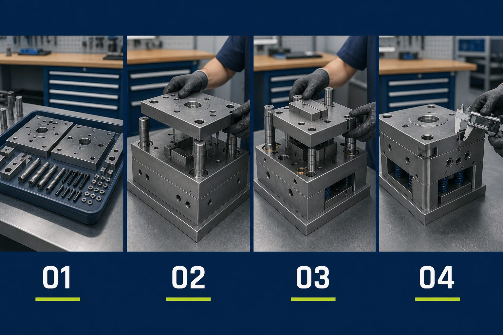

무엇을 제대로 수행해야 하는지
세부 작업순서 전수 정의 ≠ NCS
PROCESS BRIEF · 2026
NCS로 만드는
유알커넥션
NCS로 만드는
금형조립 숙련도 평가 기준
임의 기준이 아니라 · 공인 직무 수행기준(NCS)을 뼈대로 · 현장 SOP·숙련 영상과 연결
목적
AI가 숙련도를 임의 판단하지 않도록 · NCS 기반 평가 뼈대 확보
NCS · 무엇을 제대로 수행해야 하는가
SOP · 실제 순서·방식
영상 · 정상 패턴 · AI · 측정
AT A GLANCE
한눈에 보기
NCS 출발 · 회사별 SOP·영상 연결 · 객관적 AI 평가 기준
왜 NCS
왜 NCS인가
숙련도 평가 기준을 임의로 정의하지 않고 · 공인된 직무 수행기준인 NCS를 기반으로 현장 작업과 AI 분석 기준을 체계화


NCS무엇을 제대로 수행해야 하는지
SOP실제 순서·방식 구체화
영상정상 작업 패턴 확인
AI순서·시간·누락·반복·공구 측정
WHY · HOW
NCS 활용 · 평가 뼈대
NCS 분석 자료가 아님 · NCS로 평가 기준을 만드는 방식
목적 먼저
역할
AI가 임의로 숙련도를 판단하지 않도록 · 공인 직무 수행기준(NCS)이 평가 기준의 뼈대를 제공
실제 순서·방식 · 기업별
회사마다 다른 현장 흐름숙련 작업에서 관찰 행동 추출
다수 → 전문가 확정순서 · 시간 · 누락 · 반복 · 공구
최소 관찰 이벤트
01
NCS 상위 기준
↓
고정측 조립하기
평가 범위
02
SOP 핵심 단계
↓
부품 배치 → 체결 → 확인
필수만
03
AI 공통 평가항목
순서 · 시간 · 누락 · 반복 · 공구
최소 이벤트
핵심
NCS로 단계를 일일이 새로 만들지 않음 · NCS를 출발점으로 SOP·영상을 연결해 객관적 AI 숙련도 평가 기준 구성
라벨링
미세 동작 전수 정의 지양 · 정상 수행 판단에 필요한 최소 이벤트만
SCOPE · NCS 24v4
적용 능력단위 · L1 / L2
산출물 · 「표준 작업 프로세스 및 숙련도 평가 기준서」
NCS → SOP → 영상 → AI → 평가
01NCS능력단위·수행준거
→
02현장SOP·공정순서
→
03관찰영상 행동
→
04AI순서·시간·공구
→
05숙련도 평가평가체계 설계
능력단위코드수준요소적용
단순 사출금형 조립1510010411_24v424개핵심
사출금형 다듬질1510010403_24v423개병행
사출금형조립 안전규정 준수1510010410_24v423개공통
사출금형 조립부품검토1510010402_24v434개병행
사출금형 도면해독1510010401_24v43—보조
L1
단순 사출금형 조립
단순 사출금형 조립 1510010411_24v4
↓
L2 · 능력단위요소
조립 부품 준비하기→
고정측 조립하기→
가동측 조립하기→
금형조립 확인하기
↓
UR Stage · 0411 대응
PREP
FIXED
MOVING
CONFIRM
0410 안전·정리정돈은 전 과정 공통 평가축 · Stage와 별도
INPUTS
필요 자료 · NCS / 현장
NCS = 기준 · 현장 = 실제 순서
기준 + 현장
직무→
능력단위→
능력단위요소→
수행준거→
지식·기술·태도
NCS 원문
확보 완료 · 24v4
- 능력단위 정의
- 능력단위요소
- 수행준거
- 지식 · 기술 · 태도
- 적용범위 · 평가지침
핵심·병행 4개 + 보조 1개
현장자료
요청 필요
- SOP · 공정순서
- 작업지시서 · 도면
- 공구 · 품질·안전
- 숙련자 영상(복수)
- 기존 평가표
실제 시퀀스
MAPPING
계층 변환 · L1 → L5
0411 · L2.1까지 확보 · L3·L4 = SOP·영상
L1 → L5
Level의미상태
L1 능력단위
작업 범위
단순 사출금형 조립 · 1510010411_24v4
L2 능력단위요소
수행 단계
준비 → 고정측 → 가동측 → 확인
L2.1 · 주요 수행준거 요약
.1 조립 부품 준비하기사양서 · 부품 준비 · 공구 · 보호구
.2 고정측 조립하기기준면 · 로케이트링 · 스프루 · 캐비티
.3 가동측 조립하기코어 · 이젝트 · 냉각 · 가동측 부품
.4 금형조립 확인하기점검 · 수량/이상 · 체크리스트
※ NCS 24v4 수행준거를 작업 관점에서 요약 · 원문 전문은 추출표
L3 표준작업
현장 SOP
SOP 대기
L4 관찰행동
영상 단위
관찰 가능 항목만
L5 분석지표
AI 산출
순서 · 시간 · 반복 · 누락 · 공구
NCS→
요소→
수행준거→
SOP→
관찰행동→
AI→
숙련도
SEQUENCE DIRECTION
시퀀스 구성 방향 · 영상 비교
현 단계 · NCS 상위 흐름 · SOP 반영 후 세부 확정
SOP 전
S01조립 부품 준비→
S02고정측 조립→
S03가동측 조립→
S04금형조립 확인
0411 능력단위요소 대응 · SOP 확보 후 S02-01… 세부 분해
S01 → S02 → S03 → S04
순서 일치 · 필수 단계 누락 없음
전 과정 공통 평가 · 0410
안전규정 준수
보호구
작업환경
공구 취급
정리정돈
S01 → S02 → S03 → S02 → S04
—순서 일치율
—단계 반복
—재작업
—시간 편차
—누락
—공구
예시 데이터 · 실제 수치는 SOP·영상 확보 후 산출
평가 축
순서 · 단계시간 · 반복/재작업 · 누락 · 공구 · 정확도 · 안전(공통)
NEXT
다음 단계 · 현장 SOP
완료 · NCS L2/L2.1 · 잔여 · SOP 매핑 · 관찰 · 평가체계
SOP → 관찰 → 평가
✓NCS 원문24v4
1현장 흐름SOP
2매핑관찰 항목
3시퀀스·지표순서·시간
4평가체계 설계지표 종합·등급화
- 금형 종류 · 작업명
- 표준 절차 / 공정순서
- SOP
- 단계별 작업 · 공구
- 숙련자 영상(복수)
- 작업지시서 / 도면
- 품질·검사 기준
- 오류·재작업 사례
- 기존 평가표
- 숙련/비숙련 비교
현황
NCS 상위 단계·수행기준 확보 · SOP로 필수 단계 확정 · 숙련 영상에서 정상 패턴 추출 · 전문가 확인 → 세부 단위·AI 기준·평가체계
SOURCE · PDF
원문 자료 · NCS 능력단위기술서
사출금형조립 · 24v4 · 본 Brief 기준 문서
첨부